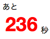
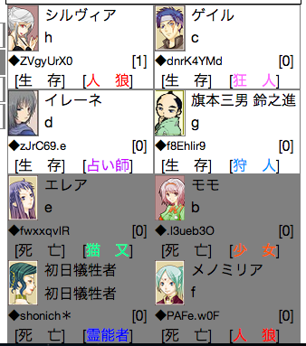

参加者募集中の村(事件前)とゲーム進行中の村の一覧が表示されます。
①日にちとフェーズ
村の進行状態を表しています。
『1日目 事件前』はゲーム開始前(参加者募集中)の村です。
②配役と人数
配役セットと、村の人数を表しています。
猫又・少女が登場する村では、配役の左右に表示されます。

人数は、ゲーム開始前の村は『参加者数/ゲームを開始できる人数』
ゲーム進行中の村は『生存者数/全参加者数』
を表します。
GM(または仮GM)募集中の村は、人数が赤色で表示されます。
その村に、最初に入村したプレイヤーがGM(仮GM)になります

③オプション
その村に設定されているオプションが表示されます
昼/夕/夜/明
左から順に、昼、夕方、夜、明け方の時間を表しています。
GM制
参加者とは別に、ゲームの進行を見守ってくれるGM(ゲームマスター)がいます。
トリップ○戦
HNにトリップキーがついていないと入村できません。
また、トリップキーの戦績が指定された数未満の場合も入村できません。
ランダムCN
ゲーム開始時にキャラクターネーム(CN)とアイコンが、設定されたアイコンセットに従ってランダムに変更されます。
観戦者発言
観戦者同士で会話ができます。(ゲーム中、観戦者の発言は観戦者同士とGMにだけ見えます)
○秒ルール
生存者は昼の開始後、指定時間経過後から発言ができるようになります。
発言できない間は、残り時間表示が赤色になります。

生存者ソート
プレイヤーリストが、生存者(上方)・死亡者(下方)に自動で並び替えられます。
死亡者が出るたびにプレイヤーリストの位置関係が変わる(可能性がある)ため、
占い理由に位置情報を入れる意味が薄くなると思われます。

投票時間非固定
夕方の時間固定を解除します。
全員の投票が終わると、残り時間に関係なく夜になります。
また、時間内であっても投票先の変更ができなくなります
役職時間非固定
明け方の時間固定を解除します。
人狼の襲撃は、残り時間の半分経過後から可能になり、
人狼の襲撃が実行されるとすぐに昼になります。
人狼の襲撃ができない間は、残り時間が赤色で表示されます。